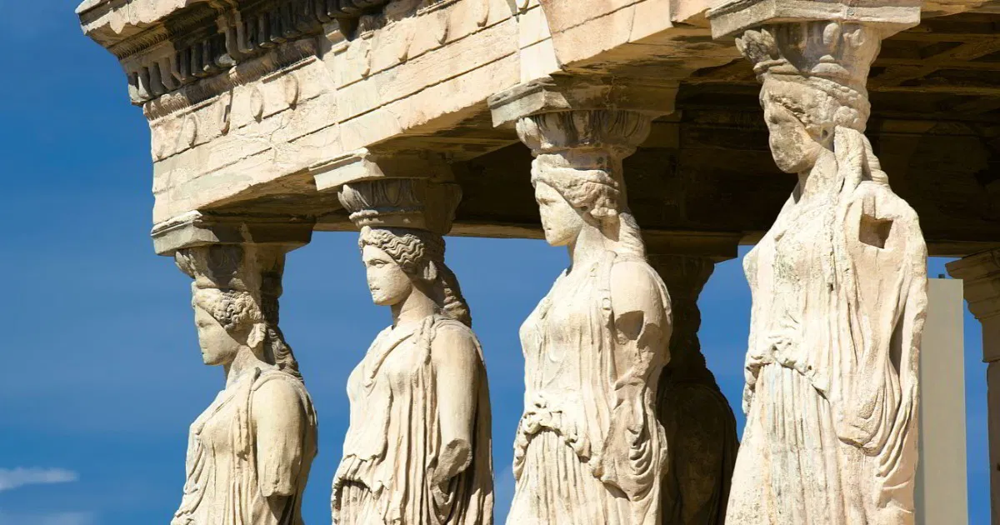

A cultura da Grécia é marcada pela preservação de tradições antigas que ainda influenciam o cotidiano da população. A música, a dança e o teatro possuem grande importância cultural, mantendo viva a herança da antiguidade, a filosofia continua presente como parte importante da identidade histórica e educacional do país. As ideias de filósofos como Sócrates, Platão e Aristóteles ainda influenciam os estudos, os debates e a valorização do conhecimento na sociedade grega.
A valorização da família e das reuniões sociais também é um aspecto forte da sociedade grega. Além disso, a religião exerce grande influência nos costumes e celebrações. O artesanato, inspirado na história e na mitologia grega, destaca-se em produções de cerâmica, bordados e esculturas, reforçando a identidade cultural do país.
